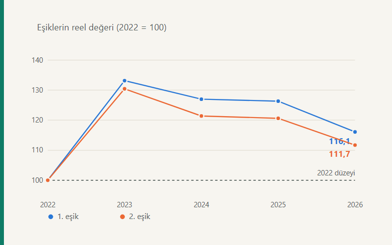

Kısa cevap
Dönem bütününde kayma yok. 2023 tarifesi enflasyonun çok üzerinde artırıldı ve izleyen yıllar için bir tampon yarattı; eşiklerin reel değeri 2026'da hâlâ 2022'nin üzerinde. Ama 2024'ten itibaren yön tersine döndü. 2026'da tarife hem tüketici enflasyonunun (%30,89) hem de mevzuatın kendi ölçütü olan yeniden değerleme oranının (%25,49) altında artırıldı — dönemin tek "kural dışı" yılı.
İkinci ve daha şaşırtıcı bulgu biçimsel: asgari ücret istisnası hesaplanan vergiden düşüldüğü ve aynı tarifeyle hesaplandığı için, asgari ücretin yıllık matrahının altında kalan bir eşikteki değişiklik asgari ücret üstü hiçbir çalışanın vergisini etkilemiyor. Etki yaklaşık değil, tam olarak sıfır. 2026'da en çok tartışılan ilk dilim eşiği tam da bu nötr bölgede.
Önce bir soru: hangi enflasyon?
"Dilim kayması var mı" sorusunun içinde gizli bir seçim var — neye göre? Üç aday ölçüt üç farklı cevap veriyor ve aralarındaki fark, bulgunun kendisi:
- Tüketici fiyatları (TÜFE). Klasik tanım: reel satın alma gücü sabitken vergi yükü arttı mı? Bu ölçüte göre dönem bütününde kayma yok.
- Asgari ücret. Tarifenin emek piyasası içindeki göreli konumunu sorar. Bu ölçüte göre tarife asgari ücretin gerisinde kaldı.
- Yeniden değerleme oranı. Mevzuatın kendi ölçütü; endeksleme kendi kuralına uydu mu? Bu ölçüte göre 2026 açık bir sapma.
Yeniden değerleme oranının iki yapısal özelliği var ve ikisi de fark üretiyor: ölçüt tüketici değil üretici fiyatları (Yİ-ÜFE) ve yıl sonu değil ekim ayı itibarıyla ortalama. Üretici fiyatları tüketici fiyatlarından yavaş arttığında bu kural kendiliğinden gizli bir vergi artışı üretiyor.
Tarife gerçekte ne kadar artırıldı?
| Yıl | 1. eşik artışı | 2. eşik artışı | Yeniden değerleme | TÜFE | Asgari ücret |
|---|---|---|---|---|---|
| 2023 | %118,75 | %114,29 | %122,93 | %64,27 | %100,00 |
| 2024 | %57,14 | %53,33 | %58,46 | %64,77 | %99,87 |
| 2025 | %43,64 | %43,48 | %43,93 | %44,38 | %30,01 |
| 2026 | %20,25 | %21,21 | %25,49 | %30,89 | %27,01 |
Tablo üç olguyu birden gösteriyor. 2023'te tarife enflasyonun çok üzerinde artırıldı. 2024 ve 2025'te yeniden değerleme oranına sadık kalındı ama TÜFE'nin biraz altında kalındı. 2026'da ise artış her iki ölçütün de altında: ikinci eşik %21,21 artarken yeniden değerleme %25,49, TÜFE %30,89.
Eşiklerin reel değeri
Aynı eşikleri TÜFE ile 2022 fiyatlarına indirgeyince eğilim görünür hâle geliyor.
| Yıl | 1. eşik | endeks | 2. eşik | endeks | 3. eşik | endeks |
|---|---|---|---|---|---|---|
| 2022 | 32.000 | 100,0 | 70.000 | 100,0 | 250.000 | 100,0 |
| 2023 | 42.613 | 133,2 | 91.313 | 130,4 | 334.815 | 133,9 |
| 2024 | 40.640 | 127,0 | 84.975 | 121,4 | 321.427 | 128,6 |
| 2025 | 40.431 | 126,3 | 84.444 | 120,6 | 307.070 | 122,8 |
| 2026 | 37.145 | 116,1 | 78.201 | 111,7 | 293.252 | 117,3 |
Üç eşik de 2023'te zirve yapmış ve o tarihten beri tekdüze biçimde erimiş. Ücretliler için bağlayıcı olan ikinci eşik, 2023 zirvesinin belirgin biçimde altında. Buna karşılık 2026'daki reel düzey 2022'nin hâlâ üzerinde. Dönemin bütününde reel bir daralma yok; 2023 sonrasında ise var.
Bu, tartışmadaki karşıtlığı da açıklıyor: 2022'den başlayan kayma bulamaz, 2023'ten başlayan üç yıllık tutarlı bir erime bulur. Aynı veriyle zıt sonuçlara varılmasının sebebi budur; savunulabilir tek yol ikisini birlikte raporlamak.
Nötrleştirme: ilk eşik neden ücretliyi etkilemiyor?
Asgari ücret istisnası, ücretin asgari ücrete isabet eden kısmını vergiden bağışık tutuyor. Ama tekniği önemli: istisna matrahtan değil, hesaplanan vergiden düşülüyor ve tutarı aynı tarifenin asgari ücret matrahına uygulanmasıyla bulunuyor.
Bunun doğrudan bir sonucu var. Bir eşik, asgari ücretin yıllık matrahının altındaysa, o eşiğin genişletilmesi hem çalışanın hesaplanan vergisini hem de istisnayı aynı tutarda küçültür. Ödenecek vergi ikisinin farkı olduğu için etki birbirini götürür — yaklaşık olarak değil, tam olarak.
Sayısal sınama. 2026 tarifesinde ilk eşik 190.000 TL. Karşı-olgusal olarak 206.806 TL'ye çıkarıldığında, aylık brüt ücreti 51.191, 76.787, 127.979 ve 204.766 TL olan dört çalışanın yıllık gelir vergisi kuruşu kuruşuna değişmiyor. Aynı tarifede ikinci eşik 400.000'den 431.937 TL'ye çıkarıldığında ise etki, kapalı formun verdiği 31.937 × (0,27 − 0,20) = 2.235,59 TL tutarına birebir eşit.
Bu, kamuoyu tartışmasının yapısal olarak yanlış parametreye odaklandığı anlamına geliyor. Her yıl manşet olan "ilk dilim" eşiği, asgari ücret üstü ücretliler için bağlayıcı değil. Anlamlı parametre %20 diliminin üst sınırı.
İlk eşik neden hep nötr bölgede kaldı?
| Yıl | Asgari ücret matrahı | 1. eşik ÷ matrah | 2. eşik ÷ matrah | 3. eşik ÷ matrah |
|---|---|---|---|---|
| 2022 | 58.523 | 0,547 | 1,196 | 4,272 |
| 2023 | 119.455 | 0,586 | 1,256 | 4,604 |
| 2024 | 204.026 | 0,539 | 1,127 | 4,264 |
| 2025 | 265.256 | 0,596 | 1,244 | 4,524 |
| 2026 | 336.906 | 0,564 | 1,187 | 4,452 |
Son üç sütun asgari ücretin yıllık matrahının kaç katında hangi eşiğin bittiğini gösteriyor. Birinci eşik/matrah oranı beş yılın hepsinde birden küçük, ikinci eşik/matrah oranı ise hepsinde birden büyük — yani asgari ücretin matrahı her yıl %20 diliminin içinde kalmış. Nötrleştirme sonucu bu yüzden bütün dönem boyunca geçerli.
Oranların kendisi bir eğilim değil salınım gösteriyor: tarife, asgari ücrete göre sistematik olarak ne genişlemiş ne daralmış.
Bordroda ne oldu?
Buraya kadarki ölçümler tarifenin kendisine bakıyordu. Asıl soru, sabit reel ücretli bir çalışanın vergi yükünün fiilen artıp artmadığı. Aşağıdaki tablo 2022 başında asgari ücretin katları kadar kazanan ve ücreti her yıl TÜFE kadar artırılan — yani reel ücreti tanım gereği sabit — çalışanların efektif gelir vergisi oranı.
| Ücret düzeyi | 2022 | 2023 | 2024 | 2025 | 2026 |
|---|---|---|---|---|---|
| 2× asgari ücret | %9,12 | %5,52 | %5,44 | %6,72 | %7,42 |
| 3× asgari ücret | %13,73 | %11,33 | %11,28 | %12,13 | %12,60 |
| 5× asgari ücret | %17,56 | %15,98 | %15,95 | %16,46 | %16,74 |
| 8× asgari ücret | %22,29 | %19,82 | %20,02 | %20,58 | %20,98 |
Bulgu tek yönlü değil. Efektif oran 2022'den 2023'e düşmüş — 2× asgari ücret düzeyinde %9,12'den %5,52'ye. Bu, 2023'teki aşırı endekslemenin sonucu. 2024'ten itibaren eğilim tersine dönmüş ve oran her yıl yükselmiş. Dört düzeyin üçünde dip 2024'te; sekiz kat düzeyinde ise 2023'te (%19,82), çünkü o çalışanın matrahı üçüncü eşiği de aşıyor ve hesabına ikinci bir terim giriyor. Dördünde de aynı olan şu: dipten sonra oran her yıl yükseliyor.
2026 TÜFE kadar artırılsaydı
| Aylık brüt | Gerçekleşen vergi | Karşı-olgusal vergi | Yıllık fark | Brüte oranı |
|---|---|---|---|---|
| 51.191 TL (2×) | 45.600 | 43.364 | 2.236 TL | %0,36 |
| 76.787 TL (3×) | 116.091 | 113.855 | 2.236 TL | %0,24 |
| 127.979 TL (5×) | 257.072 | 254.836 | 2.236 TL | %0,15 |
| 204.766 TL (8×) | 515.632 | 507.742 | 7.890 TL | %0,32 |
Tablonun en öğretici yanı ilk üç satırın aynı tutarı vermesi. Aylık brüt ücreti 51.191 TL olan çalışan ile 127.979 TL olan çalışan, eksik endekslemeden birebir aynı mutlak tutarda etkileniyor: yılda 2.236 TL.
Sebebi kapalı formda: eksik endekslemenin doğurduğu ek vergi, yalnızca hangi eşiklerin çalışanın matrahı ile asgari ücret matrahı arasında kaldığına bağlı, ücretin kendisine değil. Dolayısıyla kayıp götürü. Oransal olarak bakıldığında ilk çalışan için yıllık brütünün %0,36'sı, üçüncüsü için %0,15'i. Artan oranlı bir tarifenin eksik endekslenmesi, sonuçta tersine artan oranlı bir ek yük üretiyor.
Sekiz katlık düzeyde tutarın yükselmesinin sebebi, o çalışanın matrahının üçüncü eşiği de aşması ve toplama ikinci bir terimin girmesi.
Yöntem, sınırlar ve yeniden üretilebilirlik
Her yıl için tam bordro hesabı kuruldu: aylık brütten işçi sigorta ve işsizlik primi düşüldü, kalan kümülatif matraha eklendi, tarife kümülatif matraha uygulandı, aylık asgari ücret istisnası o ayın hesaplanan vergisini aşmayacak biçimde indirildi, damga vergisi asgari ücreti aşan brüt kısım üzerinden hesaplandı.
Bu sayfadaki hiçbir sayı elle yazılmadı. Bütün tablolar sitenin açık kaynaklı bordro motoruyla, beş yılın parametre kümesi üzerinde yeniden hesaplanıyor ve her değişiklikte testlerle doğrulanıyor. Motor hesap-cekirdegi deposunda MIT lisansıyla, parametreler bordro motoru sayfasında yayımlanıyor.
Sınırlar:
- Temsilî çalışan. Bekâr, tam yıl istihdam edilen, sabit brüt ücretli. İkramiye, prim ve fazla mesai kapsam dışı; bunlar dilim geçişini öne çeker, yani bulgular kaymanın alt sınırı.
- Başlangıç yılı seçimi sonucu tayin ediyor. 2022, asgari ücret istisnası rejiminin ilk yılı olduğu için seçildi; daha uzunu, önceki asgari geçim indirimi rejimi yüzünden karşılaştırılabilir olmazdı.
- Yalnızca ücret geliri. Ücret dışı gelirlerde %27 dilimi daha dar olduğundan sonuçlar oraya taşınamaz — serbest meslek makbuzu yazısına bakın.
- Davranışsal tepki yok. Emek arzı, kayıt dışılık ve ücret pazarlığı modellenmedi.
Kaynaklar
Bu çalışmanın kalıcı kaydı: 10.5281/zenodo.22818390 — Zenodo, açık erişim, CC BY 4.0. Atıf yapmak için bu numarayı kullanın; sayfa adresi değişebilir, DOI değişmez.
- 193 sayılı Gelir Vergisi Kanunu m.103 (tarife), mükerrer m.123 (endeksleme), m.23/1-(18) (asgari ücret istisnası) — Mevzuat Bilgi Sistemi
- 213 sayılı Vergi Usul Kanunu mükerrer m.298/B — yeniden değerleme oranının tespiti
- Gelir Vergisi Genel Tebliğleri, seri no. 317, 323, 324, 329 ve 332 — 2022–2026 tarifeleri
- Vergi Usul Kanunu Genel Tebliğleri, sıra no. 574 ve 585 — yeniden değerleme oranları
- TÜİK Tüketici Fiyat Endeksi haber bültenleri, Aralık 2021 – Aralık 2025
- Musgrave, R. A. ve Thin, T. (1948). Income Tax Progression, 1929–48. Journal of Political Economy, 56(6), 498–514.
Sık sorulan sorular
Dilim kayması nedir?
Reel geliri sabit kalan bir çalışanın, tarife dilimleri nominal gelir artışından yavaş güncellendiği için daha yüksek dilime taşınması ve ortalama vergi oranının yükselmesi. Hiçbir yasa değişmeden vergi yükünü artırır.
2022–2026'da dilim kayması oldu mu?
Dönemin bütününde hayır; 2023'ün yarattığı tampon henüz tümüyle tükenmedi. Ama 2024'te başlayıp 2026'da belirginleşen bir eğilim var.
İlk dilim eşiği artırılırsa maaşım artar mı?
Asgari ücretin üzerinde kazanıyorsanız hayır — ve bu tam olarak sıfır. Ücretliler bakımından anlamlı eşik %20 diliminin üst sınırı.
Eksik endeksleme kimi daha çok etkiliyor?
Göreli olarak düşük ücretliyi: kayıp aynı dilim aralığındaki herkes için mutlak olarak eşit, dolayısıyla düşük gelirin daha büyük bir oranına denk geliyor.
İlgili araçlar ve yazılar
- Brüt Net Maaş Hesaplama — kendi maaşınızın ay ay dökümü
- Maaşım neden düştü? — dilim etkisinin mekanizması
- Vergi dilimleri ve asgari ücret — eşiklerin asgari ücrete göre seyri
- Bordro motoru — 2020–2026 parametreleri, metodoloji ve testler